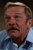

Country:United States, 134 minutes
Spoken languages:Italian, English
Genres:Drama
Director(s):Barry Levinson
Writer(s):Barry Morrow, Ronald Bass
Video Codec:Unknown
Number: 698


Certification:R
Storyline:
Selfish yuppie Charlie Babbitt's father left a fortune to his savant brother Raymond and a pittance to Charlie; they travel cross-country.
Cast: 


Medium: Original DVD,
Loaned: No
Aspect ratio: Unknown